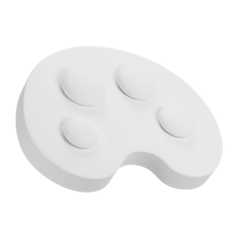
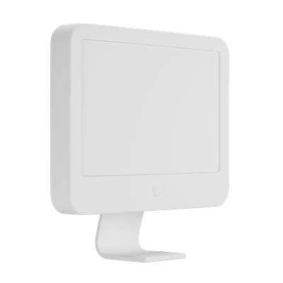
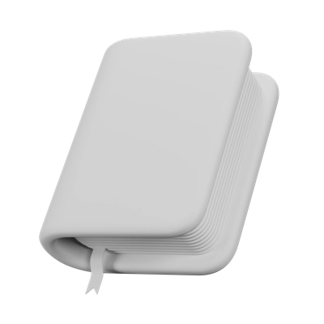
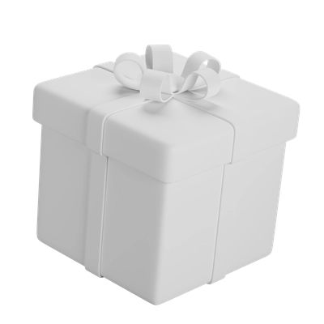
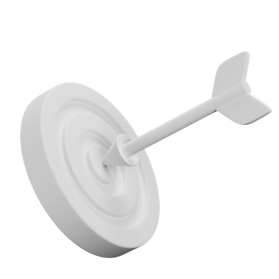
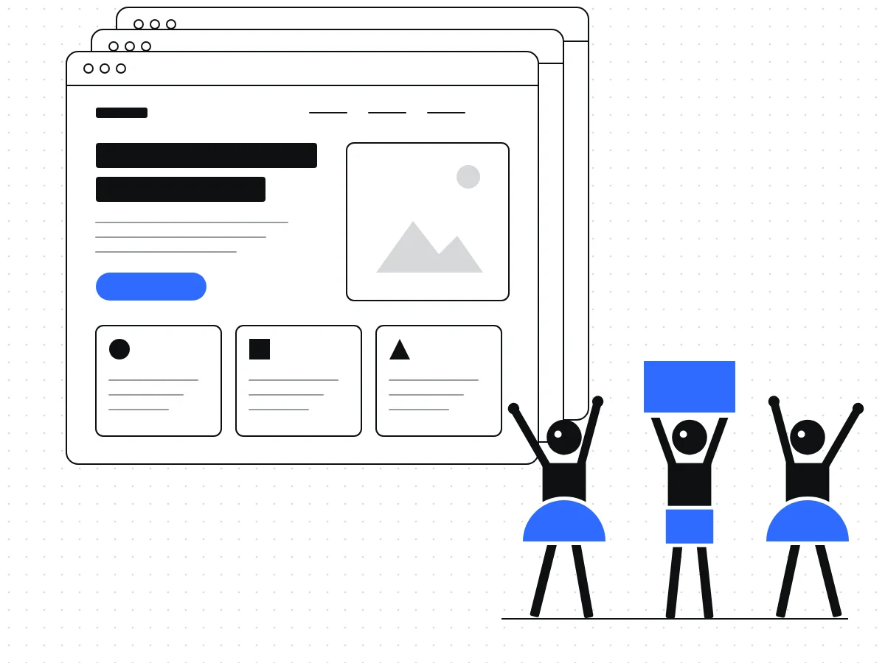
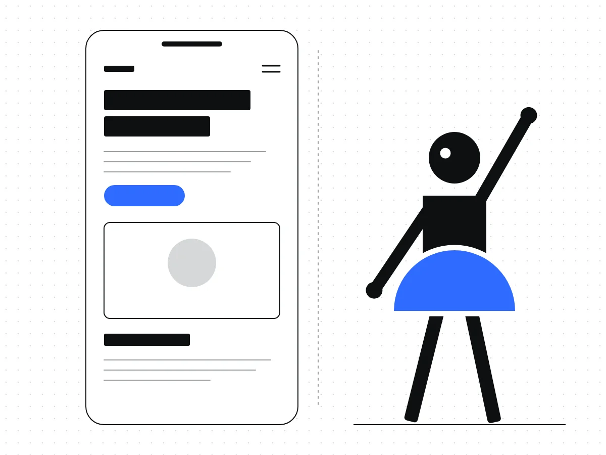
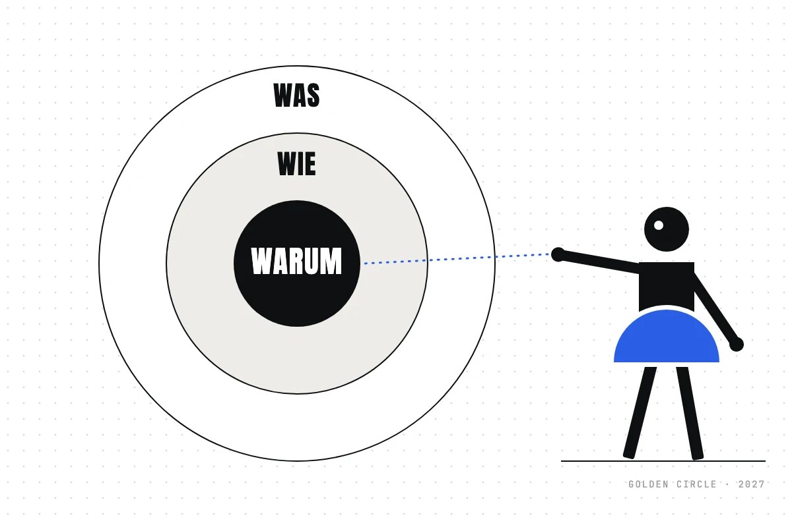

Wolfgang Bauer Ingenieurbau
Strategie, Rebranding, neue Website und Unternehmenspräsentation für ein Bauunternehmen im Ingenieurbau.
Demokratie braucht Sichtbarkeit. – Websites ohne Honorar für Vereine, NGOs, Kunst und Kultur.
Mehr erfahrenBranding, Websites, UX & KI-Lösungen für Unternehmen & Selbstständige
Projekt anfragen Zu den Leistungen
Ihre Website ist ein Vertriebsinstrument: Sie entscheidet mit, ob aus Besuchern und Besucherinnen Kundinnen und Kunden werden. Ich gestalte Websites, die intuitiv führen und messbar wirken, von der Strategie bis zur Umsetzung aus einer Hand.

Anna Härtelt
UX/UI-Designerin, Strategin und Webentwicklerin. Seit 2020 für B2B-Unternehmen aus Deutschland und der Schweiz.
Struktur, Userflows und Wireframes, die Schritt für Schritt zur Anfrage führen.
UI/UXCorporate Websites und Landingpages. In einem aktuellen Projekt stieg die Conversion um 75 %, bei höherer Lead-Qualität.
WebsiteForm follows function: Die Form folgt der Funktion. Jedes Element hat einen Zweck, vom Corporate Design bis zum Designsystem.
Mein Ansatz
MarkenbildungEine unverwechselbare Markenidentität, die bei Ihrer Zielgruppe wirklich ankommt – klar, glaubwürdig und zukunftsorientiert.
WebdesignKlares Design mit technischer Präzision – individuell, responsiv und auf Ihre Ziele ausgerichtet.
DruckProfessionelles Design für Gedrucktes – von der Visitenkarte bis zur Unternehmenspräsentation.
AnimationBewegte Grafiken und Animationen für Website, Social Media und Präsentationen.
RetainerBetreute Weiterentwicklung Ihrer Website: neue Texte und Bilder, Unterseiten und Abschnitte, 50–85 € netto pro Stunde, je nach Unternehmensgröße.Grundlage für alles, was ich gestalte: die Corporate Identity
Lösungen, die Unternehmen sichtbar machen.
Strategie, Rebranding, neue Website und Unternehmenspräsentation für ein Bauunternehmen im Ingenieurbau.
Branding, Website und Druck für eine Ärztin mit Privatpraxis für Naturheilkunde.
Branding, Onepager und Blog für eine frisch gegründete HR-Beratung.
Website für eine Künstlerin aus Leipzig.
Klingt gut – sagen jedenfalls andere.
Ich durfte mit Anna meine neue Website realisieren – und was soll ich sagen: absolute Herzensempfehlung! 💛 Neben ihrer strukturierten und zuverlässigen Arbeitsweise hat mich vor allem ihr Gespür für UX & Design begeistert. Sie denkt nicht nur technisch, sondern fühlt sich in Zielgruppen, Markenwelten und Nutzerbedürfnisse ein.
Das Ergebnis: Eine Website, die nicht nur funktioniert, sondern sich auch richtig gut anfühlt – klar, stimmig und mit Liebe zum Detail.
Wer eine Partnerin sucht, die Webentwicklung und UI/UX Design wirklich ganzheitlich denkt, ist bei Anna in den besten Händen!
Franziska Weihmann
Anna beeindruckt mit ihren kreativen Visionen und ihrem Blick für Details. Sie hat die Fähigkeit, komplexe Benutzeranforderungen in intuitive und ansprechende Designs zu übersetzen. Klare Empfehlung und eine Bereicherung für jedes Team.
Ines Gottschalk
"Anna ist eine außergewöhnlich sorgfältige UX-Designerin, die sich durch ihre schnelle Auffassungsgabe und Problemlösungsfähigkeit auszeichnet. Sie hakt immer nach, um sicherzustellen, dass keine Details übersehen werden, und geht systematisch an Herausforderungen heran. Ihre Designs sind nicht nur visuell ansprechend, sondern auch äußerst funktional und nutzerzentriert. Es ist beeindruckend, wie schnell sie komplexe Zusammenhänge erfasst und innovative Lösungen entwickelt. Anna ist eine wertvolle Bereicherung für jedes Team."
Ich habe mit ihr 8 Monate zusammen arbeiten dürfen. Es war mir immer eine Freude. LG, Carolin Schaefer
Carolin Schaefer
Anna Härtelt ist eine kompetente und inspirierende UX/UI-Designerin und Projektmanagerin. Während meiner Tätigkeit bei der Digitalbegleiter GmbH hatte ich das Glück, von ihrer umfassenden Erfahrung zu profitieren.
Sie hat mir nicht nur klare Aufgaben zugewiesen, sondern auch stets mit Rat und Tat zur Seite gestanden, wenn ich Unterstützung brauchte. Sie war immer bereit, meine Fragen zu beantworten, insbesondere zum Tool Figma, und hat meine Weiterbildung aktiv gefördert.
Ich empfehle Anna ausdrücklich als UX/UI-Designerin. Wer sie nicht bucht oder einstellt, wird definitiv etwas verpassen!

Anne Schreier
Während meiner Zeit als Werkstudentin bei der Digitalbegleiter GmbH hatte ich das Vergnügen, mit Anna im Design-Team zusammenzuarbeiten. Anna überzeugte mich von Anfang an durch ihre fachliche Kompetenz und ihren unermüdlichen Einsatz, unsere Projekte voranzubringen.
Besonders hervorzuheben ist Annas Engagement bei der Umstellung des Teams von Adobe XD auf Figma. Dank ihrer Initiative und ihrer sorgfältigen Einführung in das neue Tool verlief der Wechsel reibungslos und trug maßgeblich zur Effizienz und Kreativität im Team bei.
Ich würde jederzeit wieder mit Anna zusammenarbeiten und kann sie uneingeschränkt weiterempfehlen.

Neve Boldt
Für mittelständische Unternehmen, die ihre ganze Website umbauen: mit Leistungs-, Branchen-, Referenz- und Karriereseiten.
ab 2.850 € netto

Zum Beispiel umgesetzt für Wolfgang Bauer Ingenieurbau
Für Selbstständige und kleine Angebote: eine Website, die alles auf den Punkt bringt, und eine Marke, die zu Ihnen passt.
ab 2.450 € netto

Zum Beispiel umgesetzt für Deinetwegen
Für Vereine, NGOs, Kunst und Kultur. Ihr zahlt, was ihr könnt – weniger oder nichts ist auch in Ordnung.
Richtwert ab 250 € Onepager · etwa 500 € Vereinswebsite
Aus Kunst und Kultur: Jana Voigtmann
Ist-Analyse mit Brand Experience über alle digitalen und analogen Touchpoints, Expert Review Ihrer Website sowie Markt- und Mitbewerberrecherche.
Im Gespräch klären wir Bedarf, Branche und Zielgruppe und legen die Ziele fest.
Research, Look and Feel und Prototyp in Figma, danach die Umsetzung in WordPress (Kadence) oder Claude Code.
Ihre Website geht live.

Webdesign


Erstgespräch kostenlos & unverbindlich.